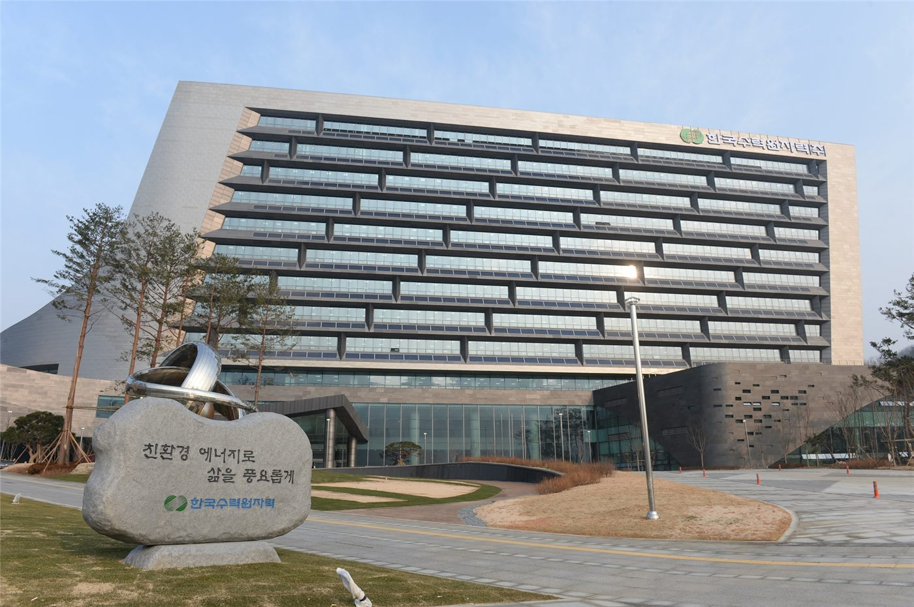

[단독] 한수원 간부의 수상한 미국 출장… “공공예산 쌈짓돈처럼”
한국수력원자력 간부의 미국 출장을 둘러싸고 공공예산 부적정 사용 의혹이 제기됐다. 출장 명목과 실제 사용처가 어긋난다는 지적이 나오며, 공기업의 예산 통제가 다시 도마에 올랐다.
장입군 기자 · 2026.07.22
橋한국

한수원 간부의 미국 출장에서 공공예산이 부적정하게 쓰였다는 의혹이 제기됐다고 조선일보가 단독 보도했다. 출장의 목적과 지출 내역이 맞지 않는다는 것이 핵심이다.
광고 문의 · 300×250공기업 예산은 국민 부담으로 조성되는 만큼 사용 목적과 근거가 엄격히 관리돼야 한다. 출장비·업무추진비 등은 사전 계획과 사후 정산으로 검증되며, 명목과 실제가 어긋나면 감사와 징계 대상이 될 수 있다.
이번 의혹은 공기업 내부 통제가 제대로 작동했는지에 대한 물음으로 이어진다. 결재·정산 과정에서 걸러지지 않았다면 시스템의 허점이, 알고도 넘어갔다면 관리 책임이 문제가 된다.
한수원 측의 공식 해명과 감사 결과가 나오기 전까지 사실관계는 확정되지 않았다. 다만 공공기관 예산의 투명성 요구가 갈수록 높아지는 흐름 속에서, 이번 사안은 상징적 시험대가 될 전망이다.
華橋時報는 공적 자원의 사용에는 그에 걸맞은 책임과 투명성이 따른다는 원칙을 지지한다. 특정인의 유무죄를 예단하지 않되, 절차적 검증이 끝까지 이뤄져야 한다는 점을 전한다.
출처·참고 (사실 확인용 — 본문은 직접 재작성)
· 조선일보
· 조선일보